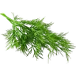

Astrology Grimoire
Moon in Gemini

DillDittany of CreteA mutable air transit governed by Mercury, the Moon in Gemini channels emotional energy toward communication, curiosity, and the exchange of ideas. This placement quickens the lunar body, heightening mental agility, social connection, and the need to process feelings through words.
Natal Moon in Gemini
The Moon represents your emotional body, how you feel your experiences, where you find comfort, and what you know instinctually. With the Moon in Gemini natally, emotional nature is curious, adaptable, and communicative.
Emotional Nature: Quick, flexible, socially attuned, mentally driven
Self-Care: Feelings are processed through conversation and mental analysis. Emotional satisfaction comes from intellectual stimulation, variety, and social connection. Talking through feelings, writing them out, or exchanging ideas helps clarify what you're experiencing. Emotions shift quickly, feeling multiple things at once or changing moods with new information is not superficiality, it's genuine emotional flexibility. Restlessness sets in when emotionally stagnant.
- Journal or write to process emotions
- Talk with friends or a therapist about feelings
- Read books that reflect your emotional experiences
- Learn new subjects or skills to feel engaged
- Maintain variety in daily routines
- Engage in wordplay, puzzles, or games
- Connect with multiple friend groups
- Allow yourself to change your mind
Transiting Moon in Gemini
When the Moon moves into the Mercury-ruled air sign of Gemini (approximately every 2.5 days), communication and ideas take center stage. Symbolized by the twins, this social, adaptable, and quick-witted transit is about connecting: understanding, gathering, and exchanging information. Socialization comes naturally, and siblings or sibling-like bonds may come into sharper focus.
Whether you are writing, making conversation, sharing knowledge, giving a talk, or teaching, this is a time to reflect on how you use your words and how you connect with the world around you. Gemini energy excels at both devising and expressing new ideas, and it can bring recognition for original thinking. Innovation and inspiration may arrive more easily than usual. Infuse new projects with that excitement, brainstorm solutions, or simply follow what sparks your curiosity.
New Moon in Gemini (Gemini season, roughly May 21 to June 20): Supports fresh starts in all Gemini-related pursuits. Start new projects, gather information, socialize with intention, and meditate on your communication patterns.
Full Moon in Gemini (Sagittarius season, roughly November 22 to December 21): Balances Gemini's quick wit with Sagittarius's philosophical depth and wanderlust. Favors spells for travel, innovation, and broadening your perspective.
Gemini Moon Magick
Cast spells to summon communication, inspiration, and mental clarity. Network and connect. Integrate your favorite form of communication into your spellwork: write, speak, inscribe a word onto a candle, or chant. Word magick thrives under this transit. Spells tied to transportation, writing, siblings, and the exchange or gathering of information are all Gemini Moon themes. The duality of the twins means emotions and magickal focus may scatter if not grounded in the heart.
Do: Communication spells, petition magick, divination requiring interpretation, studying grimoires, social gatherings, writing spells and sigils, air magick, starting new studies, word magick (chanting, inscribing, speaking), quick adaptable workings
Don't: Expect deep emotional catharsis, begin commitments requiring long-term consistency, force singular focus for extended periods, attempt heavy shadow work, start slow methodical projects
Themes
Communication, Ideas, Learning, Connecting, Writing
Ingredients
Almond, Anise, Bergamot, Caraway, Dill, Fennel, Hazel, Lavender, Marjoram, Mint, Parsley, Pear, Peppermint, Pomegranate, Rosemary, Walnut
Stones
Amazonite, Aquamarine, Blue Apatite, Blue Lace Agate, Chrysocolla, Citrine, Clear Quartz, Fluorite (Blue), Hawk's Eye (Blue Tiger's Eye), Orange Calcite